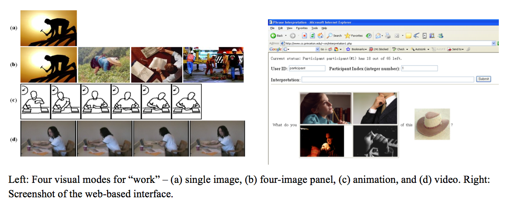

Abstract
In this paper we study how verbs are visually conveyed in daily communication contexts for both young and old adults. Four visual modes, including a single static image, a panel of four static images, an animation, and a video clip were compared. The results reveal age effects, as well as the differences in performance of visual modes introduced by visual cues and lexical properties of the verbs. We also suggest guidelines for creation of visual verbs.
Materials
PDF |
Slides |
BibTeX